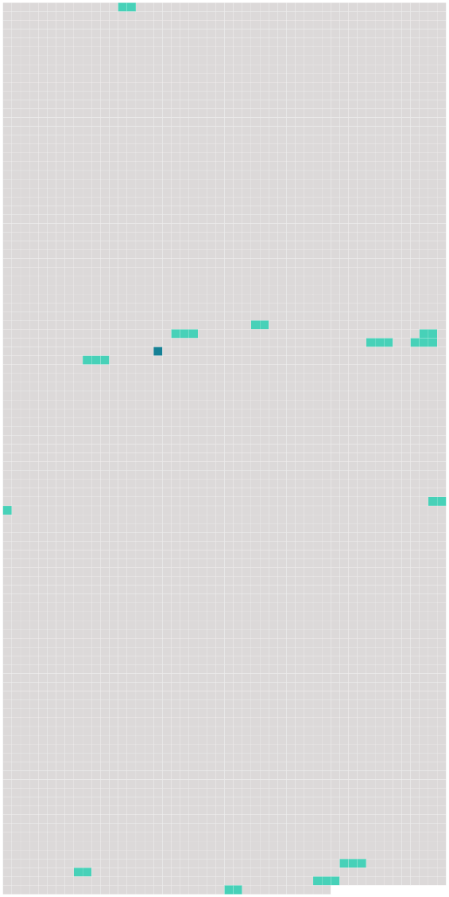

Longueur nb maillons : 13 mentions |
 |
Le transporteur délivrera au passager une fiche d'identification pour chaque article de [bagage enregistré] [63 phrases] Le transporteur est responsable du dommage survenu en cas de destruction, perte ou avarie de [bagages enregistrés] , par cela seul que le fait qui a causé la destruction, la perte ou l'avarie s'est produit à bord de l'aéronef ou au cours de toute période durant laquelle le transporteur avait la garde [des bagages enregistrés] Toutefois, le transporteur n'est pas responsable si et dans la mesure où le dommage résulte de la nature ou du vice propre [des bagages] [2 phrases]
Si le transporteur admet la perte [des bagages enregistrés] ou si [les bagages enregistrés] ne sont pas arrivés à destination dans les vingt et un jours qui suivent la date à laquelle [ils] auraient dû arriver, le passager est autorisé à faire valoir contre le transporteur les droits qui découlent du contrat de transport. [1 phrases]
Sous réserve de dispositions contraires, dans la présente convention le terme " bagages " désigne [les bagages enregistrés] aussi bien que les bagages non enregistrés. [22 phrases] Dans le transport de bagages, la responsabilité du transporteur en cas de destruction, perte, avarie ou retard est limitée à la somme de 1000 droits de tirage spéciaux par passager, sauf déclaration spéciale d'intérêt à la livraison faite par le passager au moment de la remise [des bagages enregistrés] au transporteur et moyennant le paiement éventuel d'une somme supplémentaire. [50 phrases]
La réception [des bagages enregistrés] et des marchandises sans protestation par le destinataire constituera présomption, sauf preuve du contraire, que [les bagages] et marchandises ont été livrés en bon état et conformément au titre de transport ou aux indications consignées par les autres moyens visés à l'article 3, paragraphe 2, et à l'article 4, paragraphe 2. [1 phrases] En cas d'avarie, le destinataire doit adresser au transporteur une protestation immédiatement après la découverte de l'avarie et, au plus tard, dans un délai de sept jours pour [les bagages enregistrés] et de quatorze jours pour les marchandises à dater de leur réception.
En cas de retard, la protestation devra être faite au plus tard dans les vingt et un jours à dater du jour où [le bagage] ou la marchandise auront été mis à sa disposition. |
 |
La ressource peut être téléchargée sur la page Ortolang
Si vous avez des questions ou vous voyez des erreurs, merci d'envoyer un mail à silvia.federzoni89@gmail.com
Site développé par S. Federzoni (contact)